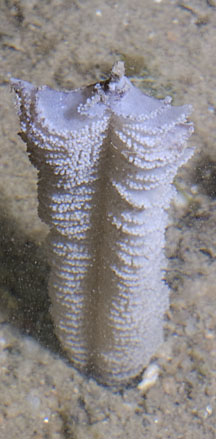
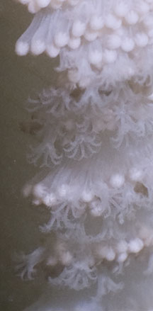
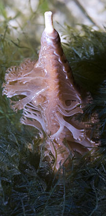
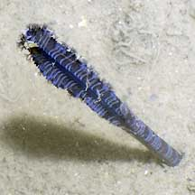
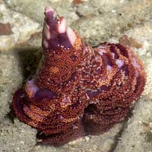
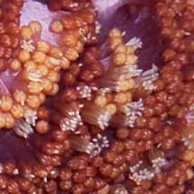
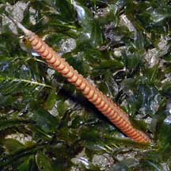
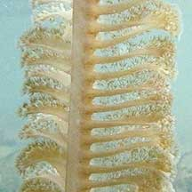

|
|
| sea pens text index | photo index |
| Phylum Cnidaria > Class Anthozoa > Subclass Alcyonaria/Octocorallia > Order Pennatulacea |
| Slender
sea pen Virgularia sp.* Family Virgulariidae updated Dec 2019 Where seen? Often mistaken for a satay stick stuck in the sand, this elegant colony of animals is commonly encountered on our Northern shores, and sometimes on our Southern shores too. On silty sand and among seagrasses. Features: Colony resembles narrow feather. 15-20cm long, slender, stiff 'stem' - the central primary polyp. With short thin leaf-like structures (1-2cm) that have no spikes on the edges. The leaves are symmetrically arranged on both sides of the 'stem',. Tiny feeding polyps (autozooids) with 8 branched tentacles emerge from these leaf-like structures when submerged. The autozooids are tubular and fused to adjacent autozooids for most of their length. When the polyps are contracted, they form little round bumps. The colony also has another kind of polyp that sucks in water (siphonozooids). These are found on the 'stem' between the leaves. The other end of the 'stem' is a bulbous foot that is buried in the sand. Colours seen include red, maroon, orange, purple and white. 'Satay stick': When exposed at low tide, the leaf-like structures are collapsed, while the stiff remains upright. So the colony looks like a thin 'satay stick' stuck in the ground. Sometimes, the central stalk is retracted into the ground, resulting in a ruffle of secondary polyps left peeping out at the surface. Often the stiff stick-like supporting axis may stick out of the fleshier 'stem'. The 'stem' usually can only be seen on one side of the animal. On the other side, the leaf-like structures obscure the 'stem'. |
 Changi, Aug 11 |
 Changi, Jul 12 |
 Cyrene Reef, Aug 13 |
| Pen pals: Slender sea pens are recorded to harbour small creatures such as porcelain crabs, shrimps, brittle stars and small nudibranchs. The Painted porcelain crab (Porcellanella picta) have been spotted on the Red slender sea pen. |
*Species are difficult to positively identify without close examination.
On this website, they are grouped by external features for convenience of display
| Slender sea pens on Singapore shores |
On wildsingapore
flickr
|
| Other sightings on Singapore shores |
 Changi, Jul 09 |
 Changi, Jul 06 |
 Primary polyp partially retracted into the ground. Beting Bronok, Aug 05 |
 Secondary polyps on the leaf-like structures. |
 Chek Jawa, Jun 06 |
|
 |
|
Links
eferences
|